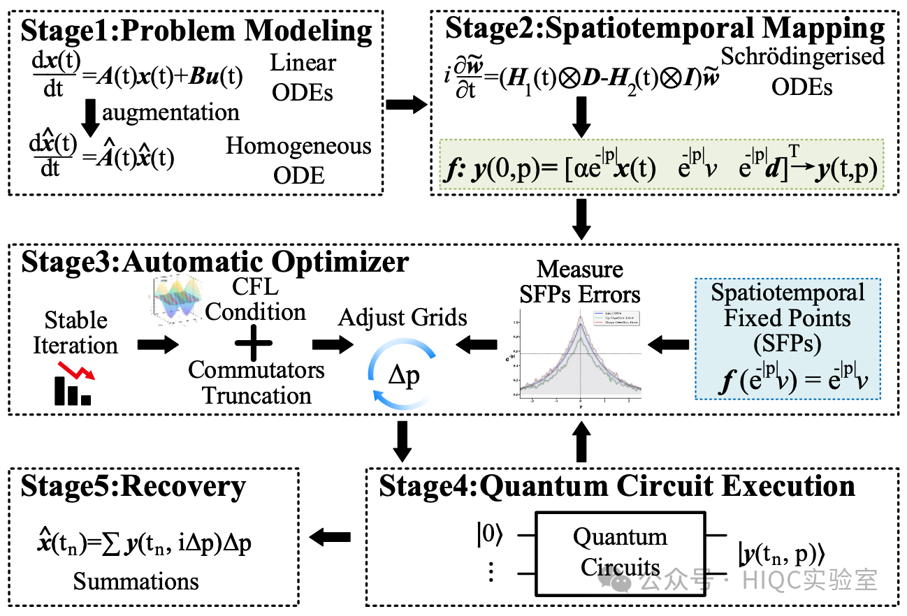

Quantum algorithm implementations for time-dependent ordinary differential equations (ODEs) typically require solving time-dependent Hamiltonian evolution problems, often leading to prohibitive computational complexity. Discretizing into time-independent Hamiltonian evolution introduces significant errors.
This paper presents an Optimized Hamiltonian Quantum Solver (OHQS) that constructs iterative time-independent Hamiltonian evolution quantum circuits through discretized spacetime mapping transformations. Our approach employs a spatiotemporal fixed-point-based automatic optimizer to effectively reduce discretization errors without requiring complex time-dependent Hamiltonian evolution circuit solutions. The proposed method is applied to power system transient computations.

Figure: The proposed Optimized Hamiltonian Quantum Solver (OHQS) framework